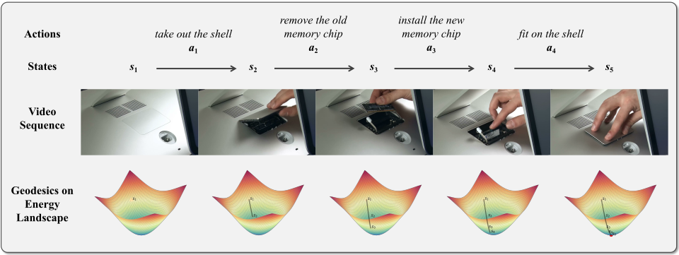
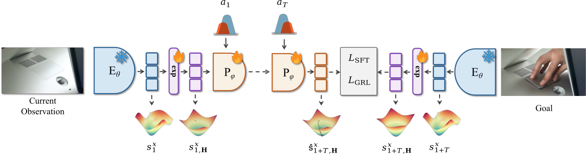

Visualization results by QVGGT. 请在此处放置定性可视化结果或对比帧说明。
Estimating 3D attributes directly from images has advanced rapidly with the Visual Geometry Grounded Transformer (VGGT), which predicts camera parameters, depth maps, and point clouds in a single forward pass. However, its 1.2B-parameter scale severely limits deployment on resource-constrained platforms such as UAVs and mobile AR devices. To address this limitation, we introduce QVGGT, a tailored quantization framework designed to compress VGGT.
Our approach starts from the observation that transformer blocks within VGGT exhibit heterogeneous sensitivity to quantization. We thus analyze per-block quantization sensitivity and propose a selective mixed-precision strategy that allocates higher precision to the most fragile transformer blocks. To address the amplification of quantization error caused by high-variance camera and register tokens, we further introduce token filtering with camera information compensation, which removes these outliers from activation calibration and restores their geometric cues using a PCA-derived global compensation token. Finally, we develop a task-aware scale search mechanism that evaluates candidate quantization scales not only through layer reconstruction but also through multi-head supervision and cross-head geometric consistency among camera poses, depth maps, and point maps.
Extensive experiments on multiple geometry perception benchmarks demonstrate that QVGGT achieves near-lossless W4A16 quantization, preserving the accuracy of all 3D prediction heads while delivering 3$\sim$4.9$\times$ memory reduction and up to 2.8$\times$ real hardware speedup over FP32.
Our approach makes high-fidelity 3D perception feasible on edge devices, enabling practical deployment of feed-forward 3D reconstruction models in real-world constrained environments.

Method: QVGGT. 在此处简述方法要点：选择性混合精度、相机/寄存器 token 过滤与补偿、任务感知比例搜索等。

在此处放置定性对比图及图注说明。